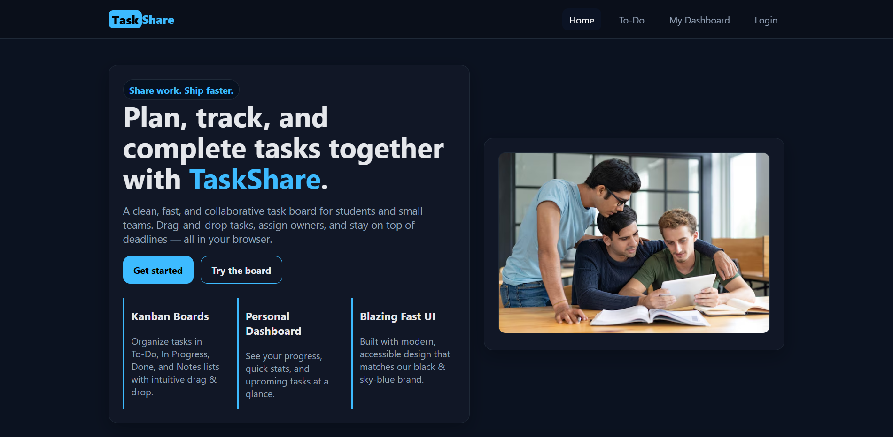

Task Share — Simple Collaborative Task List
Overview
Task Share is a lightweight, real-time web app for small teams and study groups to create, assign, and track shared tasks—fast to use, mobile-friendly, and easy to maintain. Built with HTML/CSS/JavaScript and Firebase Realtime Database, the goal was zero complex setup or extra accounts. Role: Solo Developer.


Approach & Methods
- Real-time collaboration: Used Firebase Realtime Database to broadcast task changes instantly to all users, eliminating manual refresh and heavy backend overhead.
- Mobile-first UX: Designed a layout that remains usable on small screens and scales to desktop.
- Simplicity over complexity: Focused on short task flows (create → assign → track) to keep the learning curve minimal for clubs and small teams.
Features
- Add, edit, and delete tasks via a simple click interface.
- Assign tasks to members and set due dates.
- Real-time updates (changes appear instantly for all users).
- Progress tracking with a small completion-percentage bar.
Results & Impact
Outcome: Task Share met its goal as a simple, shareable task board for quick team organization—ideal for small projects, club activities, and student group work.
Challenges & Learnings
- Concurrent edits: Handling conflicts when two people edited the same task simultaneously.
- Responsive design: Ensuring the UI worked well on both mobile and desktop browsers.